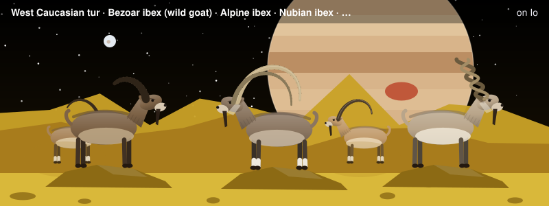
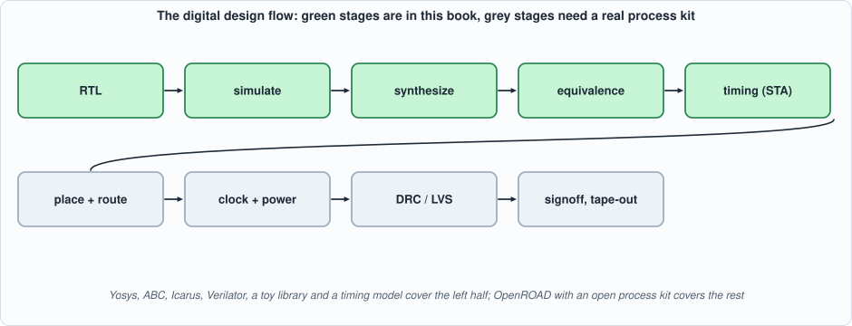
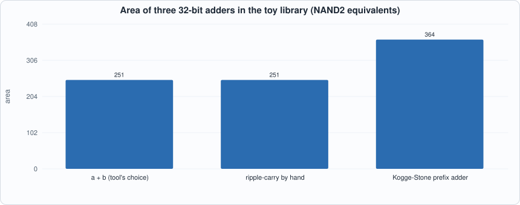
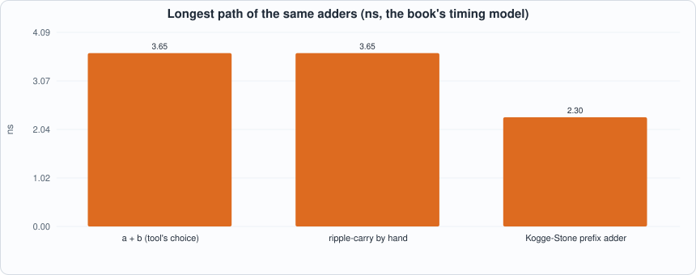

Appendix G. The EDA Flow¶

About the animals in this picture and where they are standing
- West Caucasian tur (Capra caucasica) lives only in the western Caucasus, on steep slopes above the forest line. Its horns are short and heavy, curving outward and back, and it moves up and down cliffs with ease.
- Bezoar ibex (wild goat) (Capra aegagrus) lives from Turkey and the Caucasus through Iran to Pakistan. It is the wild ancestor of the domestic goat, which people began keeping some ten thousand years ago.
- Alpine ibex (Capra ibex) lives in the European Alps, usually above the tree line on steep rock, and is a famously sure-footed climber. Males carry horns that can reach about a metre. Hunting left only a small remnant, around the Gran Paradiso in Italy, by the early 1800s; reintroductions have since restored it across the Alps.
- Nubian ibex (Capra nubiana) lives in the rocky, arid hills of north-east Africa and the Arabian Peninsula, from the Sinai and Egypt south to Sudan and Ethiopia. Its coat matches the desert rock, and the males' ridged horns sweep back like a sickle.
- Markhor (Capra falconeri) lives in the mountains of Pakistan, Afghanistan and neighbouring regions. The males' horns twist in a corkscrew; the name is often explained as Persian for 'snake-eater'. It is Pakistan's national animal, and community-based conservation has helped some populations recover.
The scene is imaginary: it is set on Io, the most volcanically active body in the solar system, under the enormous disc of Jupiter. The animals are stylised drawings, shown where they could not live, for effect.
Who this is for: readers of Chapters 1 and 10 who want to know what happens between Verilog and a chip, which parts of it this book does with open-source tools, and which it does not. EDA stands for electronic design automation: the programs that turn a description into something a factory can build. The tools used here are Yosys (synthesis), ABC (logic optimization inside Yosys), Icarus Verilog and Verilator (simulation), and the book's own toy cell library and timing analyzer (Chapter 10). tools/appx_g.py runs them stage by stage.
The flow¶

Figure G.1: the digital design flow. The book covers the left half; the right half needs a real process design kit (PDK: the foundry's cell library, design rules and models) and place-and-route software such as OpenROAD.- RTL. Register-transfer-level Verilog: what the circuit does each cycle (Appendix B).
- Simulation. Does the RTL do the job? Testbenches run in Icarus and Verilator. Most bugs die here.
- Synthesis. The RTL is translated to a netlist of cells from a library: elaborate (read the language),
proc(turn procedural blocks into logic and flip-flops), optimize, technology-map (choose library cells), and optimize again. Yosys with ABC does it. - Equivalence checking. Does the netlist still compute what the RTL does? Simulation tests samples; a formal check proves it for all inputs.
- Static timing analysis. The longest path between flip-flops against the clock period (Appendix A, "why a clock has a speed limit").
- Floorplan, placement and routing. Where each cell goes on the die and how wires join them. The physical design adds the wire delays that logic synthesis ignores.
- Clock tree and power grid. The clock must reach every flip-flop at nearly the same time, and power every cell without voltage drops.
- Physical verification. Design-rule checks (DRC: are the shapes manufacturable) and layout-versus-schematic (LVS: does the layout implement the netlist).
- Signoff and tape-out. Final timing and power with the parasitics extracted from the layout, then the masks.
Synthesis, stage by stage¶
The script runs the voter of the Background page (vote3_assign, written as the expression (a & b) | (a & c) | (b & c)) through the first stages and counts the cells after each:
| after | cells |
|---|---|
| reading and elaborating | 5 generic $and/$or |
proc and opt |
5 (nothing to simplify yet) |
techmap |
5 simple gates ($_AND_, $_OR_) |
abc |
4 (ABC found a cheaper factoring, for example (a & b) | (c & (a | b)): two ANDs and two ORs) |
Then it maps the optimized logic to the book's toy library (lib/toy.lib): 3 cells, area 3.67 units, which is a cell count and an area in the library's units, not square micrometres. The toy library is not a real process; it is what makes the numbers of Chapter 10 reproducible and honest about being a model.
Three descriptions, one circuit. The same voter written as an expression, as a case statement and as explicit gates produces the same area: 3 cells and 3.67 units. ABC picks different but equivalent cells for the case version (an AOI21 and two NOR2s instead of two NAND2s and an OAI21), at the same area. Synthesis optimizes the logic function; how you write it does not matter for such a small function.
Equivalence checking: a proof, not a test¶
A miter circuit joins two designs, feeds them the same inputs and compares their outputs; a SAT solver then looks for an input on which they differ. If it finds none, the designs are equivalent for all 2^n inputs. The script proves the three voters equivalent. It then breaks one by forgetting the b & c term and asks again: the solver finds the counterexample a = 0, b = 1, c = 1, where the correct voter says 1 (two of three agree) and the broken one says 0. A formal check reaches in a fraction of a second what an exhaustive test would also reach for three inputs, but the same check works at 64 inputs, where exhaustive simulation (2^64 cases) cannot. (Chapter 10 uses ABC's cec, a cousin of this check, to confirm that the synthesized netlists still equal the RTL.)
Architecture beats the tool¶
The last test synthesizes a 32-bit adder written three ways: with +, with a hand-built ripple chain, and with a Kogge-Stone prefix tree (Chapter 10).

Figure G.2: area. The first two are the same circuit: Yosys turns+ into a ripple chain.

Figure G.3: longest path in the book's timing model. The prefix adder is 37% faster for 45% more area.Two lessons. First, writing + does not get a fast adder: it gets whatever structure the tool's default produces (a ripple chain here). Second, the tool does not invent algorithms: it optimizes the logic you gave it, but moving from ripple to prefix is a design decision a person or a generator makes. Note that at 8 bits all three variants synthesized to the same netlist (37 cells, 1.01 ns): the structures only separate as the width grows, which is why the script uses 32.
What this book's flow is, and is not¶
| in this book | not in this book | |
|---|---|---|
| synthesis | Yosys + ABC to a toy library | a foundry library, multi-corner optimization |
| timing | a 60-line longest-path model (cell delays only) | wire delay, fan-out, clock skew, on-chip variation |
| physical | none | placement, routing, clock tree, power grid, DRC, LVS |
| results | area in NAND2 equivalents, nanoseconds in a model | square micrometres, milliwatts, megahertz of a real chip |
This is why every synthesis number in the book is labelled toy library and why the chips are called models of a chip, not a chip (Introduction). Taking the same RTL through OpenROAD with an open PDK (SkyWater 130 nm, for instance) is the natural next step and the one that turns the model into a measurement.
Running the examples¶
#!/usr/bin/env python3
"""Appendix G (the EDA flow): run the open-source flow stage by stage on small designs. Needs Yosys. Usage: appx_g.py"""
import os, re, sys
sys.path.insert(0, os.path.dirname(os.path.abspath(__file__))); import hw, synth
R = hw.ROOT
def ys(script): rc, out = hw._run(["yosys", "-p", script], cwd=R); return out
def cells(out, n=1):
sec = out.split("Number of cells")[-1] if "Number of cells" in out else out.split("cells")[-1]; return {m.group(1): int(m.group(2)) for m in re.finditer(r"^\s+(\$?\w+)\s+(\d+)\s*$", sec, re.M)}
F = "rtl/demo_vote3.v"
print("== 1. the flow, one stage at a time, on a three-input majority voter (vote3_assign, written as an expression)")
for stage, cmd in (("read + elaborate (hierarchy)", "hierarchy -top vote3_assign"), ("proc: processes to logic", "hierarchy -top vote3_assign; proc"), ("opt: simplify", "hierarchy -top vote3_assign; proc; opt"), ("techmap: to simple gates", "hierarchy -top vote3_assign; proc; opt; techmap; opt"), ("abc: optimize and map to AND/OR/XOR/MUX gates", "hierarchy -top vote3_assign; proc; opt; techmap; opt; abc -g AND,OR,XOR,MUX; opt_clean")):
out = ys(f"read_verilog -sv {F}; {cmd}; stat"); c = cells(out); print(f" {stage:48s} {sum(c.values()):3d} cells: {c}")
print("\n== 2. three descriptions of the same circuit synthesize to the same logic: area and cells in the book's toy library (lib/toy.lib)")
res = {}
for top in ("vote3_assign", "vote3_always", "vote3_gates"):
r = synth.synth([F], top, "appx_g_" + top); res[top] = r; print(f" {top:14s}: {r['ncells']} cells {r['cells']}, area {r['area']}")
print("\n== 3. formal equivalence: a miter compares two circuits on ALL inputs at once (a SAT solver proves the outputs never differ)")
def equiv(a, b, extra=""):
out = ys(f"read_verilog -sv {F}; {extra} proc; opt; miter -equiv -flatten -make_assert {a} {b} m; hierarchy -top m; sat -prove-asserts -show-ports m")
return ("EQUIVALENT: no input makes the outputs differ" if "no model found: SUCCESS" in out else "DIFFERENT"), out
for a, b in (("vote3_assign", "vote3_always"), ("vote3_assign", "vote3_gates")): print(f" {a} vs {b}: {equiv(a, b)[0]}")
bad = "module vote3_bad (input a, input b, input c, output y);\n assign y = (a & b) | (a & c);\nendmodule\n"
open(os.path.join(R, "out", "appx_g_bad.v"), "w").write(bad)
out = ys(f"read_verilog -sv {F}; read_verilog -sv out/appx_g_bad.v; proc; opt; miter -equiv -flatten -make_assert vote3_assign vote3_bad m; hierarchy -top m; sat -prove-asserts -show-ports m")
print(f" vote3_assign vs vote3_bad (the b & c term forgotten): {'EQUIVALENT' if 'no model found: SUCCESS' in out else 'DIFFERENT (the solver found an input on which the outputs differ)'}; its counterexample:")
for l in out.splitlines():
if re.match(r"\s+\\in_[abc]\s|\s+\\gold_y|\s+\\gate_y", l) or re.match(r"\s+\\(in_a|in_b|in_c|gold_y|gate_y)", l): print(" ", " ".join(l.split()))
print("\n== 4. synthesis result: the mapped netlist of the voter (toy library cells), first lines")
net = open(os.path.join(R, "out", "appx_g_vote3_assign_net.v")).read().splitlines(); print("\n".join(" " + l for l in net[:14]))
print("\n== 5. architecture changes the result more than the tool: the same function (32-bit addition) written three ways, synthesized to the toy library, with the longest path from the book's timing analyzer (Chapter 10)")
os.makedirs(os.path.join(R, "out"), exist_ok=True); w = "".join(f"module appx_{k}32 (input [31:0] a, input [31:0] b, output [32:0] s); demo_{k} #(32) u (.a(a), .b(b), .s(s)); endmodule\n" for k in ("add", "ripple", "kogge"))
open(os.path.join(R, "out", "appx_g_add32.v"), "w").write(w)
print(f" {'description':26s} {'cells':>6s} {'area':>8s} {'levels':>7s} {'longest path':>13s}")
for k, label in (("add", "a + b (tool's choice)"), ("ripple", "ripple-carry by hand"), ("kogge", "Kogge-Stone prefix adder")):
top = f"appx_{k}32"; r = synth.synth(["rtl/demo_add.v", "out/appx_g_add32.v"], top, "appx_g_" + top); t = synth.sta(os.path.join(R, "out", f"appx_g_{top}_net.json"), top); print(f" {label:26s} {r['ncells']:6d} {r['area']:8.1f} {t['depth']:7d} {t['critical_ns']:10.2f} ns")
print(" the tool turns '+' into a ripple chain (Chapter 10); a prefix adder is faster and larger. 'Synthesis' optimizes the logic you wrote; it does not invent a better algorithm")
print("\n== 6. the stages of a full flow, and which are in this book (Yosys + the book's toy library and analyzer) and which need a real PDK")
for row in (("1. RTL", "Verilog you write", "this book"), ("2. simulation", "Icarus, Verilator: does the RTL do the job", "this book"), ("3. synthesis", "RTL -> gates of a library (Yosys + ABC)", "this book (toy library)"), ("4. equivalence check", "gates still equal the RTL", "this book (miter, ABC cec)"), ("5. static timing", "longest path against the clock", "this book (a model of it)"), ("6. floorplan, place, route", "where cells go and how wires connect them (OpenROAD)", "NOT in this book"), ("7. clock tree, power grid", "distribute the clock and power", "NOT in this book"), ("8. physical verification", "design rules, layout against netlist (DRC, LVS)", "NOT in this book"), ("9. signoff, tape-out", "final timing/power with extracted parasitics; masks", "NOT in this book")): print(f" {row[0]:28s} {row[1]:56s} {row[2]}")
To compile and run: python3 tools/appx_g.py (about 20 seconds; needs Yosys). Recorded output:
== 1. the flow, one stage at a time, on a three-input majority voter (vote3_assign, written as an expression)
read + elaborate (hierarchy) 5 cells: {'$and': 3, '$or': 2}
proc: processes to logic 5 cells: {'$and': 3, '$or': 2}
opt: simplify 5 cells: {'$and': 3, '$or': 2}
techmap: to simple gates 5 cells: {'$_AND_': 3, '$_OR_': 2}
abc: optimize and map to AND/OR/XOR/MUX gates 4 cells: {'$_AND_': 2, '$_OR_': 2}
== 2. three descriptions of the same circuit synthesize to the same logic: area and cells in the book's toy library (lib/toy.lib)
vote3_assign : 3 cells {'NAND2': 2, 'OAI21': 1}, area 3.67
vote3_always : 3 cells {'AOI21': 1, 'NOR2': 2}, area 3.67
vote3_gates : 3 cells {'NAND2': 2, 'OAI21': 1}, area 3.67
== 3. formal equivalence: a miter compares two circuits on ALL inputs at once (a SAT solver proves the outputs never differ)
vote3_assign vs vote3_always: EQUIVALENT: no input makes the outputs differ
vote3_assign vs vote3_gates: EQUIVALENT: no input makes the outputs differ
vote3_assign vs vote3_bad (the b & c term forgotten): DIFFERENT (the solver found an input on which the outputs differ); its counterexample:
\in_a 0 0 0
\in_b 1 1 1
\in_c 1 1 1
== 4. synthesis result: the mapped netlist of the voter (toy library cells), first lines
/* Generated by Yosys 0.33 (git sha1 2584903a060) */
module vote3_assign(a, b, c, y);
wire _0_;
wire _1_;
input a;
wire a;
input b;
wire b;
input c;
wire c;
output y;
wire y;
NAND2 _2_ (
== 5. architecture changes the result more than the tool: the same function (32-bit addition) written three ways, synthesized to the toy library, with the longest path from the book's timing analyzer (Chapter 10)
description cells area levels longest path
a + b (tool's choice) 157 250.7 32 3.65 ns
ripple-carry by hand 157 250.7 32 3.65 ns
Kogge-Stone prefix adder 257 364.5 19 2.30 ns
the tool turns '+' into a ripple chain (Chapter 10); a prefix adder is faster and larger. 'Synthesis' optimizes the logic you wrote; it does not invent a better algorithm
== 6. the stages of a full flow, and which are in this book (Yosys + the book's toy library and analyzer) and which need a real PDK
1. RTL Verilog you write this book
2. simulation Icarus, Verilator: does the RTL do the job this book
3. synthesis RTL -> gates of a library (Yosys + ABC) this book (toy library)
4. equivalence check gates still equal the RTL this book (miter, ABC cec)
5. static timing longest path against the clock this book (a model of it)
6. floorplan, place, route where cells go and how wires connect them (OpenROAD) NOT in this book
7. clock tree, power grid distribute the clock and power NOT in this book
8. physical verification design rules, layout against netlist (DRC, LVS) NOT in this book
9. signoff, tape-out final timing/power with extracted parasitics; masks NOT in this book
Self-check questions¶
- Name the stages between Verilog and a netlist, and say what each does in one sentence.
- Why can simulation never prove two circuits equivalent, and what does a miter do differently?
- The counterexample for the broken voter is
a = 0, b = 1, c = 1. Compute both outputs by hand. - Why are the three 8-bit adders identical after synthesis but the 32-bit ones not?
- What does logic synthesis not know that place-and-route does? Name two things that make real timing worse than the model's.
- Why is area in "NAND2 equivalents" a reasonable unit, and what is its weakness?